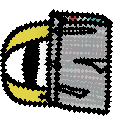

120 MINUTES, NO TAKESIES-BACKSIES
Each full page had to be drawn in under 120 minutes, providing a great challenge in time management and efficiency.

AT LEAST 1 PAGE PER DAY
Each day during development, at least one full page had to be completed, adding another layer of challenge to the project.
ONLY KNOWN CHARACTERS
The comic starts off with no new characters ― only familiar, already known faces from my other works here!
EVERYTHING RECORDED
Every single page drawing process had to be recorded, timelapsed or both. Check out the recordings here.